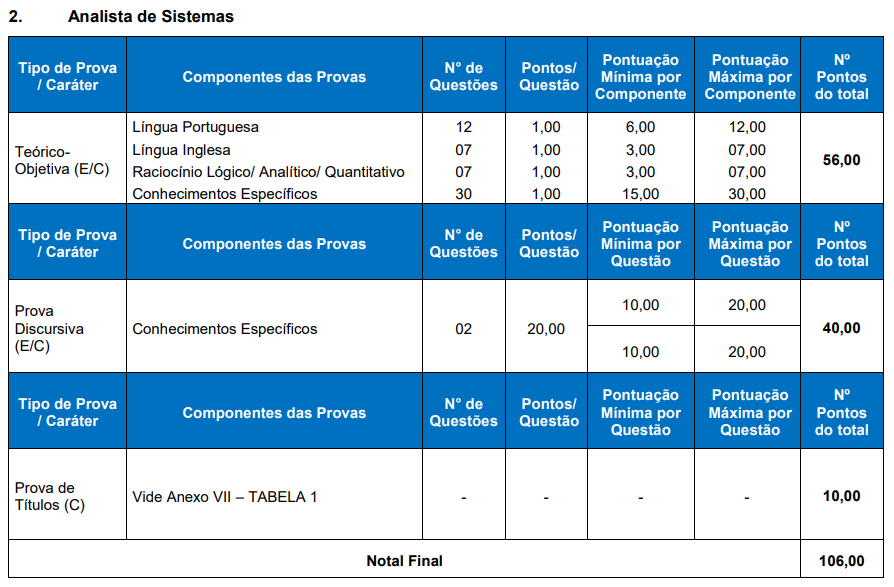

Resumo
Material de estudo para concurso do BRDE, cargo Analista de Sistemas – Subárea Ciência de Dados.
REQUISITO: Diploma de graduação, devidamente registrado, em pelo menos um dos seguintes cursos de nível superior: Análise de Sistemas; Tecnologia da Informação; Sistemas de Informação; Processamento de Dados; Ciência da Computação; Engenharia da Computação; Engenharia de Sistemas; Bacharelado em Informática; Administração com Ênfase em Análise de Sistemas.
Data da prova: 12/03/2023

Conhecimentos Específicos
Cargo C07: Analista de Sistemas – Ciência de Dados
a) Banco de Dados: Fundamentos de administração de dados: Segurança; Modelagem de dados: Modelo entidade-relacionamento (entidades, atributos, chaves e relacionamentos) e Normalização;
b) Fundamentos de Banco de Dados: Conceitos: Sistemas de gerência de banco de dados (SGBD), Arquitetura, modelos lógicos e representação física; Organização física e métodos de acesso; Conceito de transação, concorrência, recuperação, integridade; Linguagens de definição (DDL) e manipulação de dados (DML) em SGBDs relacionais; Procedimentos (stored procedures), funções (functions), visões (views), visões materializadas (materialized views) e gatilhos (triggers), Linguagem de consulta estruturada (SQL, Avaliação de modelos de dados, Técnicas de engenharia reversa para criação e atualização de modelos de dados, Integração dos dados (ETL, Transferência de Arquivos e Integração via Base de Dados, Data Lakes e Soluções para Big Data, Diferenciação entre bancos relacionais, multidimensionais, documentos e grafos.
c) Análise de dados e informações: Dado, informação, conhecimento e inteligência; Conceitos, fundamentos, características, técnicas e métodos de Business Intelligence (BI); Mapeamento de fontes de dados, Dados estruturados e dados não estruturados, Conceitos de OLAP e suas operações, Conceitos de Data Warehouse. Técnicas de modelagem e otimização de bases de dados multidimensionais, Construção de relatórios e dashboards interativos em ferramentas de BI, Manipulação de dados em planilhas, Geração de insights a partir de relatórios e dashboards, BI como suporte a processos de tomada decisão, Conceitos Básicos em Séries Temporais, Conceitos Básicos de estatística descritiva, probabilística e testes de hipótese, Manipulação, tratamento e visualização de dados, Tratamento de dados faltantes, Tratamento de dados categóricos, Normalização numérica, Detecção e tratamento de outliers;
d) Aprendizado de máquina (machine learning): Regressão Linear e Regressão Logística, Classificação, Métricas de avaliação, Overfitting e underfitting de modelos, Regularização; Seleção de modelos: Erro de Generalização, Validação Cruzada, Conjuntos de Treino, Validação e Teste; Conceitos de aprendizado não supervisionado, Clustering, Árvores de decisão e random forests, Máquina de suporte de vetores (SVM), Naive Bayes, K-NN;
e) Plataforma de BI Microsoft: SQL Server, SQL Server Management Studio, SQL Server Integration Services, SQL Server Analysis Services, Power BI Report Server, Power BI Desktop, Serviço Power BI em Nuvem;
f) Gerenciamento de Projetos: Conceitos básicos do PMBOK 7ª Edição, Metodologia SCRUM;
g) Governança de TI: ITIL versão 4 (ITIL 4): Operação de Serviços (Gerenciamento de Eventos, Gerenciamento de Incidentes, Gerenciamento de Problemas, Cumprimento de Requisições, Gerenciamento de Acessos), Desenho de Serviços (Gerenciamento de Níveis de Serviço, Gerenciamento de Capacidade, Gerenciamento de Disponibilidade, Gerenciamento de Continuidade de Serviços de TI, Gerenciamento de Continuidade de Negócio), Transição de Serviços (Gerenciamento de Configuração e Ativos de Serviços de TI, Gerenciamento de Liberação e Implantação, Gerenciamento de Mudanças), Melhoria Contínua de Serviços, Métricas (Fatores Críticos de Sucesso - CSFs, Índices Chave de Performance - KPIs).
Conhecimentos Básicos
LÍNGUA PORTUGUESA
1. Leitura e compreensão de textos:
1.1 Assunto. 1.2 Estruturação do texto. 1.3 Ideias principais e secundárias. 1.4 Relação entre as ideias. 1.5 Efeitos de sentido. 1.6 Figuras de linguagem. 1.7 Recursos de argumentação. 1.8 Informações implícitas: pressupostos e subentendidos. 1.9 Coesão e coerência textuais.
2. Léxico:
2.1 Significação de palavras e expressões no texto. 2.2 Substituição de palavras e de expressões no texto. 2.3 Estrutura e formação de palavras.
3. Aspectos linguísticos:
3.1 Relações morfossintáticas. 3.2 Ortografia: emprego de letras e acentuação gráfica sistema oficial vigente (inclusive o Acordo Ortográfico vigente, conforme Decreto 7.875/12). 3.3 Relações entre fonemas e grafias. 3.4 Flexões e emprego de classes gramaticais. 3.5 Vozes verbais e sua conversão. 3.6 Concordância nominal e verbal. 3.7 Regência nominal e verbal (inclusive emprego do acento indicativo de crase). 3.8 Coordenação e subordinação: emprego das conjunções, das locuções conjuntivas e dos pronomes relativos. 3.9 Pontuação.
LÍNGUA INGLESA
Reading Comprehension.
Simple and compound sentences: a. Noun clauses; b. Relative clauses;
- Clause combinations – coordinators and subordinators; d. Conditional sentences;
Nouns: a. Compound nouns; b.Countable/ uncountable nouns;
Articles.
Pronouns.
Adjectives.
Adverbs.
Prepositions and phrasal verbs.
Verbs.
Word order.
Vocabulary and false friends.
Collocations.
Pronunciation.
RACIOCÍNIO LÓGICO/ANALÍTICO/QUANTITATIVO
Estrutura lógica de relações arbitrárias entre pessoas, lugares, objetos ou eventos fictícios; deduzir novas informações das relações fornecidas e avaliar as condições usadas para estabelecer a estrutura daquelas relações. Diagramas lógicos.
Proposições e conectivos: Conceito de proposição, valores lógicos das proposições, proposições simples, proposições compostas. Operações lógicas sobre proposições: Negação, conjunção, disjunção, disjunção exclusiva, condicional, bicondicional.
Construção de tabelas-verdade. Tautologias, contradições e contingências. Implicação lógica, equivalência lógica, Leis De Morgan. Argumentação e dedução lógica.
Sentenças abertas, operações lógicas sobre sentenças abertas. Quantificador universal, quantificador existencial, negação de proposições quantificadas.
Argumentos Lógicos Dedutivos; Argumentos Categóricos.